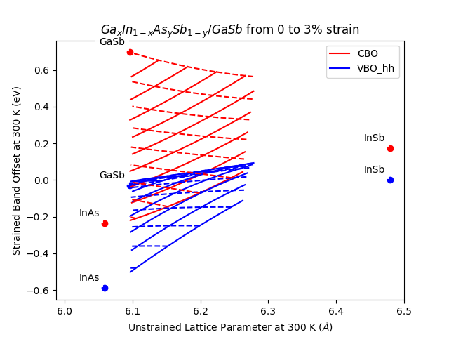

Plot Strained Band Offset vs Lattice Constant of Quaternary3¶
Source:
#
# Copyright (c) 2013-2014, Scott J Maddox
# Copyright (c) 2025, Duarte Silva
#
# This file is part of openbandparams.
#
# openbandparams is free software: you can redistribute it and/or modify
# it under the terms of the GNU Affero General Public License as published
# by the Free Software Foundation, either version 3 of the License, or
# (at your option) any later version.
#
# openbandparams is distributed in the hope that it will be useful,
# but WITHOUT ANY WARRANTY; without even the implied warranty of
# MERCHANTABILITY or FITNESS FOR A PARTICULAR PURPOSE. See the
# GNU Affero General Public License for more details.
#
# You should have received a copy of the GNU Affero General Public License
# along with openbandparams. If not, see <http://www.gnu.org/licenses/>.
#
#############################################################################
# Make sure we import the local openbandparams version
import os
import sys
sys.path.insert(0,
os.path.abspath(os.path.join(os.path.dirname(__file__), '../../../..')))
from openbandparams import *
import matplotlib.pyplot as plt
import numpy
quaternary = GaInAsSb
T = 300
# initialize the plot
fig = plt.figure()
ax = fig.add_subplot(111)
plt.title('$%s/GaSb$ from 0 to 3%% strain' % (quaternary.latex()))
plt.xlabel('Unstrained Lattice Parameter at %g K ($\AA$)' % T)
plt.ylabel('Strained Band Offset at %g K (eV)' % T)
# plot the binaries
xs = []
ys = []
labels = []
for b in [GaSb, InAs, InSb]:
xs.append(b.a(T=T))
ys.append(b.VBO(T=T))
labels.append(b.name)
ax.plot(xs, ys, 'bo')
# label the binaries
for x, y, label in zip(xs, ys, labels):
ax.annotate(label, xy=(x, y), xytext=(-5, 5), ha='right', va='bottom',
bbox=dict(linewidth=0, fc='white', alpha=0.9),
textcoords='offset points')
# plot the binaries
xs = []
ys = []
labels = []
for b in [GaSb, InAs, InSb]:
xs.append(b.a(T=T))
ys.append(b.VBO() + b.Eg_Gamma(T=T))
labels.append(b.name)
ax.plot(xs, ys, 'ro')
# label the binaries
for x, y, label in zip(xs, ys, labels):
ax.annotate(label, xy=(x, y), xytext=(-5, 5), ha='right', va='bottom',
bbox=dict(linewidth=0, fc='white', alpha=0.9),
textcoords='offset points')
# plot the quaternary
indices = numpy.arange(100)
fractions = numpy.linspace(0, 1, 100)
x = numpy.empty(100, dtype=numpy.float32)
CBO = numpy.empty(100, dtype=numpy.float32)
VBO_hh = numpy.empty(100, dtype=numpy.float32)
first = True
for xfrac in numpy.linspace(0, 1, 10):
for i, yfrac in zip(indices, fractions):
instance = quaternary(x=xfrac, y=yfrac)
x[i] = instance.a(T=T)
strained = instance.strained_001(GaSb)
strain = strained.strain_out_of_plane(T=T)
if not (0. <= strain <= 0.03):
CBO[i] = numpy.nan
VBO_hh[i] = numpy.nan
else:
CBO[i] = strained.CBO(T=T)
VBO_hh[i] = strained.VBO_hh(T=T)
if first:
ax.plot(x, CBO, 'r-', label='CBO')
ax.plot(x, VBO_hh, 'b-', label='VBO_hh')
first = False
else:
ax.plot(x, CBO, 'r-')
ax.plot(x, VBO_hh, 'b-')
for yfrac in numpy.linspace(0, 1, 10):
for i, xfrac in zip(indices, fractions):
instance = quaternary(x=xfrac, y=yfrac)
x[i] = instance.a(T=T)
strained = instance.strained_001(GaSb)
strain = strained.strain_out_of_plane(T=T)
if not (0. <= strain <= 0.03):
CBO[i] = numpy.nan
VBO_hh[i] = numpy.nan
else:
CBO[i] = strained.CBO(T=T)
VBO_hh[i] = strained.VBO_hh(T=T)
ax.plot(x, CBO, 'r--')
ax.plot(x, VBO_hh, 'b--')
xmin, xmax = plt.xlim()
plt.xlim(xmin - 0.05, xmax)
plt.legend(loc='best')
if __name__ == '__main__':
import sys
if len(sys.argv) > 1:
output_filename = sys.argv[1]
plt.savefig(output_filename)
else:
plt.show()
Result:
